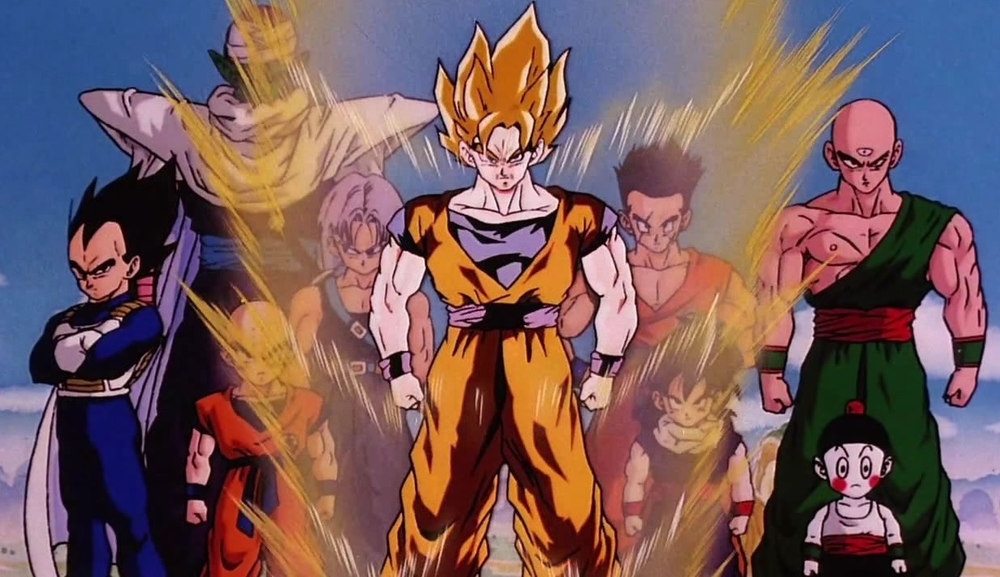

Dragon Ball Z: Uma Jornada Épica de Lutas e Aventuras Chega aos Fãs em Nova Adaptação Cinematográfica
Os fãs de uma das séries de anime e mangá mais icônicas do mundo estão se preparando para uma nova e emocionante aventura, já que "Dragon Ball Z" retorna em uma adaptação cinematográfica repleta de ação, poderes extraordinários e batalhas épicas. A amada história que cativou gerações agora ganha vida de maneira ainda mais intensa nas telonas.
"Dragon Ball Z" narra a saga de Goku, um guerreiro saiyajin que busca se tornar o lutador mais forte do universo, enfrentando ameaças cósmicas e vilões poderosos ao longo do caminho. A nova adaptação promete capturar a essência da série original, mantendo a fidelidade aos personagens e trama que conquistaram o coração de milhões de fãs em todo o mundo.
A produção do filme tem sido mantida em sigilo, mas os trailers e teasers revelam vislumbres de cenas de ação alucinantes, batalhas titânicas e transformações impressionantes. Os fãs podem esperar uma experiência visualmente deslumbrante, com efeitos especiais de última geração que trazem à vida os famosos ataques de energia, transformações e movimentos característicos dos personagens.
O elenco escolhido para dar vida aos adorados personagens de "Dragon Ball Z" tem sido motivo de antecipação. Os atores selecionados para os papéis principais foram elogiados por sua habilidade em capturar as nuances e a essência dos guerreiros saiyajins e outros heróis e vilões da série. A expectativa em torno das interações entre os personagens e a recriação das batalhas lendárias aumentou ainda mais a empolgação dos fãs.
Além das cenas de ação e lutas intensas, a nova adaptação de "Dragon Ball Z" também explorará as relações complexas e os momentos emocionais que definiram a série original. Os dilemas morais, amizades profundas e a busca incessante por superação são elementos essenciais que farão parte da narrativa, proporcionando aos espectadores uma experiência completa e envolvente.
"Dragon Ball Z" é mais do que apenas uma adaptação cinematográfica; é uma celebração da cultura pop e uma homenagem à influência duradoura que a série teve em todo o mundo. Os fãs antigos e novos estão ansiosos para testemunhar a saga de Goku e seus aliados em uma nova e emocionante jornada repleta de ação, aventura e momentos emocionantes.
Conforme a data de lançamento se aproxima, a expectativa em torno da nova adaptação de "Dragon Ball Z" só cresce. Os fãs estão se preparando para embarcar em uma viagem nostálgica e emocionante, enquanto a série que moldou a infância de muitos retorna para cativar uma nova geração de admiradores.